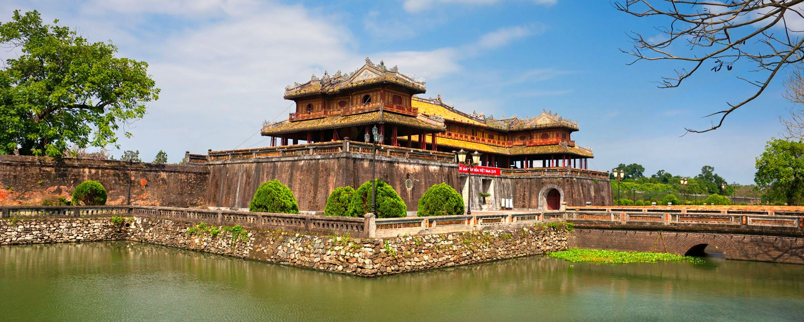

Trang web về du lịch vào hè của chúng tôi vừa cho ra mắt bảng xếp hạng top 25 điểm đến du lịch nổi tiếng trên toàn thế giới. Danh sách này được tổng hợp dựa trên các bình chọn của các tín đồ du lịch trên toàn thế giới trải nghiệm và đánh giá. Các điểm đến du lịch có thể là 1 thành phố, 1 vùng, 1 hòn đảo hoặc 1 quốc gia nào đó.
Trong số các địa điểm du lịch Việt Nam ẩn chứa nhiều giá trị văn hoá - lịch sử nhất, chắc chắn Tràng An - Ninh Bình là cái tên hàng đầu. Khu di tích này đã được UNESCO công nhận là Di sản văn hoá và thiên nhiên thế giới vào 2014.
Khu thắng cảnh này tập hợp các kiến trúc gắn liền với cố đô Hoa Lư hào hùng xưa, ẩn sâu trong các dãy núi đá vôi tráng lệ và dòng sông uốn lượn mơ màng. Nếu bạn là tín đồ du lịch văn hoá hoặc tâm linh, một số kiến trúc sau sẽ khiến bạn “động lòng": đền Trần Ninh Bình, đền Tứ Trụ, đền Suối Tiên,...
Khám phá Tràng An bằng thuyền để thấy bằng hết khung cảnh hùng vỹ tại đây.
Không chỉ nổi danh với kinh thành xa xưa được lưu giữ gần như hoàn hảo, du lịch Huế còn có rất nhiều điểm check-in nổi tiếng khác mà chúng ta không thể bỏ qua. Đây cũng chính là lý do vì sao vé máy bay đi Huế được được săn đón nồng nhiệt.
Một trong số đó là đồi Vọng Cảnh và đồi Thiên An ngay gần trung tâm thành phố. Trong khi đồi Vọng Cảnh “ghi điểm" với view nhìn nước non hùng tráng, đồi Thiên An lại êm đềm hơn với các con đường mơ màng giữa rừng thông.
Các điểm du lịch tại Huế đều thu hút cực nhiều khách vi vu mỗi năm.